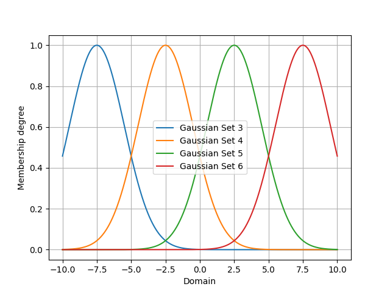
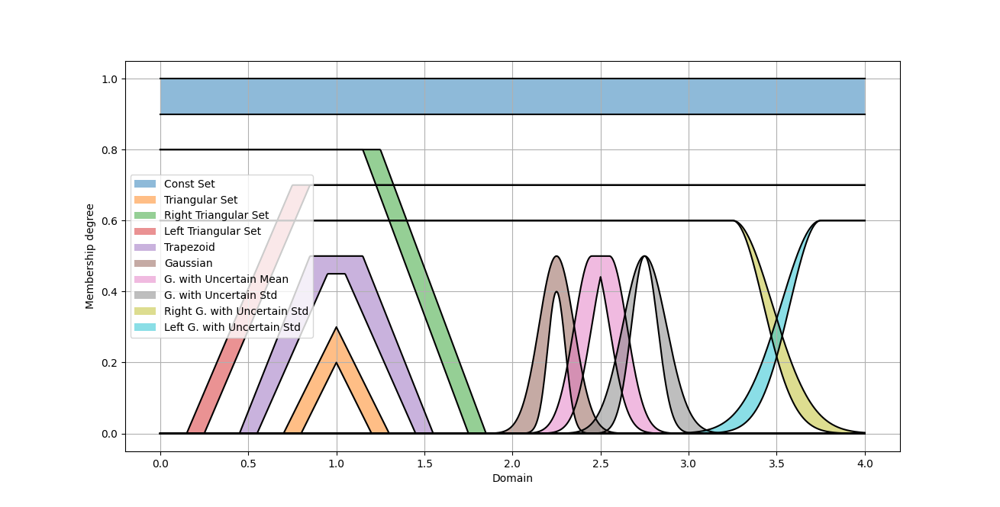
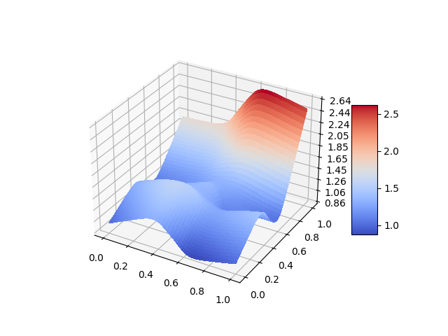
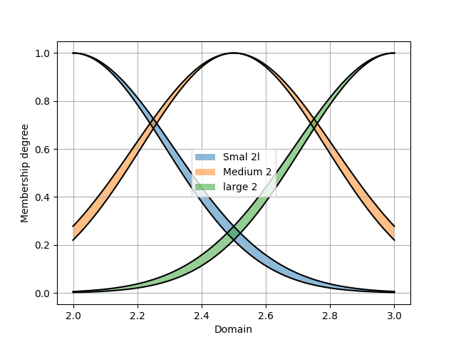
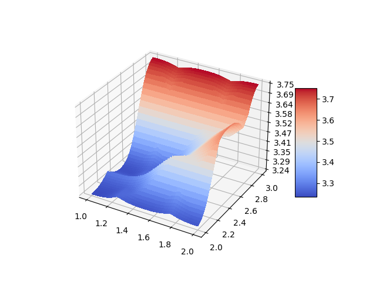

PyIT2FLS
PyIT2FLS is a NumPy- and SciPy-based toolkit designed for working with Type 1 and Interval Type 2 Fuzzy Logic Systems.
The toolkit is distributed under the MIT License. If you use PyIT2FLS in your work, please cite the preprint of our paper, PyIT2FLS: A New Python Toolkit for Interval Type 2 Fuzzy Logic Systems.
BibTeX:
@misc{haghrah2019pyit2fls,
title={PyIT2FLS: A New Python Toolkit for Interval Type 2 Fuzzy Logic Systems},
author={Amir Arslan Haghrah and Sehraneh Ghaemi},
year={2019},
eprint={1909.10051},
archivePrefix={arXiv},
primaryClass={eess.SY}
}
MLA:
Haghrah, Amir Arslan, and Sehraneh Ghaemi. "PyIT2FLS: A New Python Toolkit for Interval Type 2 Fuzzy Logic Systems." arXiv preprint arXiv:1909.10051 (2019).
Installation
PyIT2FLS can be installed using one of the following methods:
From Source
Download and unzip the source code into a directory. Then, navigate to the PyIT2FLS folder and run the following command:
pip3 install .
Using pip
Alternatively, you can install or upgrade PyIT2FLS directly from PyPI using:
pip3 install --upgrade pyit2fls
Support My Work with Tether (USDT)
If you find this Python library helpful and wish to support its ongoing development, your donations are greatly appreciated. You can contribute Tether (USDT) to the following wallet address:
TN1stagYLtqq4MUKPj6Q3fqtH3GittRawE
Thank you for your generosity—it directly helps maintain and enhance this project!
Getting started
This section introduces basic examples of how to use the PyIT2FLS library. For more advanced use cases, please refer to the examples directory in the PyIT2FLS github repository.
Example 1: Defining type 1 fuzzy sets and performing AND/OR operators on them
In this example, we define two trapezoidal Type 1 fuzzy sets and apply fuzzy AND and OR operators on them. First, we create the trapezoidal fuzzy sets using the T1FS class and the trapezoid_mf function. Then, we plot the fuzzy sets together using the T1FS_plot function:
from pyit2fls import (T1FS, trapezoid_mf, T1FS_plot, )
from numpy import linspace
domain = linspace(-1.5, 1.5, 100)
set1 = T1FS(domain, trapezoid_mf, [-1.25, -0.75, -0.25, 0.25, 1.])
set2 = T1FS(domain, trapezoid_mf, [-0.25, 0.25, 0.75, 1.25, 1.])
T1FS_plot(set1, set2, legends=["Trapezoidal Set 1", "Trapezoidal Set 2", ])
The output of this code is shown below:
{kind=link}
Next, we compute the AND of these two sets using two different T-norms:
from pyit2fls import (min_t_norm, product_t_norm, T1FS_AND, )
set3 = T1FS_AND(domain, set1, set2, min_t_norm)
set4 = T1FS_AND(domain, set1, set2, product_t_norm)
T1FS_plot(set3, set4, legends=["Fuzzy Set 3", "Fuzzy Set 4", ])
The output of this code is shown below:

Finally, we compute the OR of these two sets using two different S-norms:
from pyit2fls import (max_s_norm, probabilistic_sum_s_norm, T1FS_OR, )
set5 = T1FS_OR(domain, set1, set2, max_s_norm)
set6 = T1FS_OR(domain, set1, set2, probabilistic_sum_s_norm)
T1FS_plot(set5, set6, legends=["Fuzzy Set 5", "Fuzzy Set 6", ])
The output of this code is shown below:

Example 2: Defining type 1 TSK fuzzy systems
In this example, we define a simple Type 1 TSK fuzzy system, calculate its output for specific inputs, and plot its control surface. First, we define the T1FS objects representing the inputs of the fuzzy system.
from pyit2fls import (T1TSK, T1FS, gaussian_mf, T1FS_plot, )
from numpy import (linspace, meshgrid, zeros, )
from mpl_toolkits import mplot3d
import matplotlib.pyplot as plt
from matplotlib import cm
from matplotlib.ticker import (LinearLocator, FormatStrFormatter, )
domain = linspace(-1.5, 1.5, 100)
t1fs1 = T1FS(domain, gaussian_mf, [-0.5, 0.5, 1.])
t1fs2 = T1FS(domain, gaussian_mf, [ 0.5, 0.5, 1.])
T1FS_plot(t1fs1, t1fs2, legends=["Gaussian Set 1", "Gaussian Set 2", ])
The output of this code is shown below:

As shown, there are two Gaussian fuzzy sets. The parameters of a Gaussian membership function are the mean, standard deviation, and height, respectively. Next, we define the T1TSK system along with its input and output variables.
myT1TSK = T1TSK()
myT1TSK.add_input_variable("X1")
myT1TSK.add_input_variable("X2")
myT1TSK.add_output_variable("Y")
Next, we define the outputs of the fuzzy rules. These outputs must be functions of the inputs. Since our myT1TSK system has two inputs, each output function must also depend on two inputs. Let’s assume the system includes four rules.
def Y1(X1, X2):
return 2. * X1 + 3. * X2
def Y2(X1, X2):
return -1.5 * X1 + 2. * X2
def Y3(X1, X2):
return -2. * X1 - 1.2 * X2
def Y4(X1, X2):
return 5. * X1 - 2.5 * X2
After defining the output functions, we define the rules using the following rule base:
X2: t1fs1 |
X2: t1fs2 |
|
X1: t1fs1 |
Y: Y1 |
Y: Y2 |
X1: t1fs2 |
Y: Y3 |
Y: Y4 |
myT1TSK.add_rule([("X1", t1fs1), ("X2", t1fs1)],
[("Y", Y1), ])
myT1TSK.add_rule([("X1", t1fs1), ("X2", t1fs2)],
[("Y", Y2), ])
myT1TSK.add_rule([("X1", t1fs2), ("X2", t1fs1)],
[("Y", Y3), ])
myT1TSK.add_rule([("X1", t1fs2), ("X2", t1fs2)],
[("Y", Y4), ])
Now, it is time to evaluate the system’s output for various points in the universe of discourse and plot the control surface:
X1, X2 = meshgrid(domain, domain)
O = zeros(shape=X1.shape)
for i, x1 in zip(range(len(domain)), domain):
for j, x2 in zip(range(len(domain)), domain):
o = myT1TSK.evaluate({"X1":x1, "X2":x2}, params=(x1, x2))
O[i, j] = o["Y"]
fig = plt.figure()
ax = fig.add_subplot(111, projection="3d")
surf = ax.plot_surface(X1, X2, O, cmap=cm.coolwarm,
linewidth=0, antialiased=False)
ax.zaxis.set_major_locator(LinearLocator(10))
ax.zaxis.set_major_formatter(FormatStrFormatter('%.02f'))
fig.colorbar(surf, shrink=0.5, aspect=5)
plt.show()
Finally, the output of this code is shown below:

Example 3: Defining type 1 Mamdani fuzzy systems
Let’s define a simple type 1 Mamdani fuzzy system using PyIT2FLS, calculate its output for some inputs, and plot the control surface for it. So, we first define the T1FSs representing inputs of the fuzzy system.
from pyit2fls import (T1Mamdani, T1FS, gaussian_mf, T1FS_plot, )
from numpy import (linspace, meshgrid, zeros, )
from mpl_toolkits import mplot3d
import matplotlib.pyplot as plt
from matplotlib import cm
from matplotlib.ticker import (LinearLocator, FormatStrFormatter, )
inputDomain = linspace(-1.5, 1.5, 100)
t1fs1 = T1FS(inputDomain, gaussian_mf, [-0.5, 0.5, 1.])
t1fs2 = T1FS(inputDomain, gaussian_mf, [ 0.5, 0.5, 1.])
T1FS_plot(t1fs1, t1fs2, legends=["Gaussian Set 1", "Gaussian Set 2", ])
The output of this code would be as below:

As you see, there are two Gaussian fuzzy sets for describing the input variables. After that, we should define the T1FSs representing outputs of the fuzzy system.
outputDomain = linspace(-10., 10., 1000)
t1fs3 = T1FS(outputDomain, gaussian_mf, [-7.5, 2.0, 1.])
t1fs4 = T1FS(outputDomain, gaussian_mf, [-2.5, 2.0, 1.])
t1fs5 = T1FS(outputDomain, gaussian_mf, [ 2.5, 2.0, 1.])
t1fs6 = T1FS(outputDomain, gaussian_mf, [ 7.5, 2.0, 1.])
T1FS_plot(t1fs3, t1fs4, t1fs5, t1fs6,
legends=["Gaussian Set 3", "Gaussian Set 4",
"Gaussian Set 5", "Gaussian Set 6", ])
We have defined four sets in this step. So, for all possible fuzzy rules we can define a distinct output. The output T1FSs would be as following:
{kind=link}
Now, it is time to define the type 1 Mamdani system and its input and output variables. We can choose inference engine and defuzzification method among some famous methods (refer to the documentations for more details). In our example, we will use “Product” inference engine and center of gravity, “CoG”, defuzzification method. Also, we name the inputs as “X1” and “X2”, and the output as “Y”.
myT1Mamdani = T1Mamdani(engine="Product", defuzzification="CoG")
myT1Mamdani.add_input_variable("X1")
myT1Mamdani.add_input_variable("X2")
myT1Mamdani.add_output_variable("Y")
After defining the T1Mamdani system, it is time to define the rule-base of the fuzzy system. We use the rules represented in the following table to define the rule-base.
X2: t1fs1 |
X2: t1fs2 |
|
X1: t1fs1 |
Y: t1fs3 |
Y: t1fs4 |
X1: t1fs2 |
Y: t1fs5 |
Y: t1fs6 |
The codes to add rules to the rule-base would be as following:
myT1Mamdani.add_rule([("X1", t1fs1), ("X2", t1fs1)], [("Y", t1fs3), ])
myT1Mamdani.add_rule([("X1", t1fs1), ("X2", t1fs2)], [("Y", t1fs4), ])
myT1Mamdani.add_rule([("X1", t1fs2), ("X2", t1fs1)], [("Y", t1fs5), ])
myT1Mamdani.add_rule([("X1", t1fs2), ("X2", t1fs2)], [("Y", t1fs6), ])
Finally, it is time to evaluate the system output for different points in the univertse of discourse and plot the control surface:
X1, X2 = meshgrid(inputDomain, inputDomain)
O = zeros(shape=X1.shape)
for i, x1 in zip(range(len(inputDomain)), inputDomain):
for j, x2 in zip(range(len(inputDomain)), inputDomain):
s, c = myT1Mamdani.evaluate({"X1":x1, "X2":x2})
O[i, j] = c["Y"]
fig = plt.figure()
ax = fig.add_subplot(111, projection="3d")
surf = ax.plot_surface(X1, X2, O, cmap=cm.coolwarm,
linewidth=0, antialiased=False)
ax.zaxis.set_major_locator(LinearLocator(10))
ax.zaxis.set_major_formatter(FormatStrFormatter('%.02f'))
fig.colorbar(surf, shrink=0.5, aspect=5)
plt.show()
And, the output of this code would be as below:

Example 4: Defining interval type 2 fuzzy sets
In this example, we are going to define and plot ten different and well-known types of interval type 2 fuzzy sets. We need some initial imports and defining the universe of discourse, before using the IT2FS class. This class requires five parameters for creating an interval type 2 fuzzy set, domain, upper membership function, parameters of the upper membership function, lower membership function, and parameters of the lower membership function.
from pyit2fls import (IT2FS, tri_mf, const_mf, rtri_mf, ltri_mf,
trapezoid_mf, gaussian_mf, IT2FS_Gaussian_UncertMean,
IT2FS_Gaussian_UncertStd, R_IT2FS_Gaussian_UncertStd,
L_IT2FS_Gaussian_UncertStd, IT2FS_plot, )
from numpy import linspace
domain = linspace(0, 4, 1001)
Now the first IT2FS we are going to define is the constant interval type 2 fuzzy set. It needs only the UMF and the LMF as constant membership functions. The constant membership function has only one parameter, its value. The check_set option while defining an IT2FS can be used for debuginh purposes. Sometimes there can be mistake in fuzzy set parameters causing LMF to have greater membership degree than the UMF in some points on the universe of discourse. In such a situation, if check_set is set zero, an exceptation will be raised.
Const = IT2FS(domain, const_mf, [1.0], const_mf, [0.9], check_set=True)
The next IT2FS is triangular interval type 2 fuzzy set. It has triangular-type membership function for both UMF and LMF. The parameters for a triangular membership function defined by tri_mf are left, center, right, and height of the triangle.
Tri = IT2FS(domain, tri_mf, [0.7, 1.0, 1.3, 0.3], tri_mf, [0.8, 1.0, 1.2, 0.2], check_set=True)
We can also define left and right triangular interval type 2 fuzzy sets using rtri_mf and ltri_mf functions. The required parameters for rtri_mf are right, center, and height. Similarly, for ltri_mf, the parameters are left, center, and height.
RTri = IT2FS(domain, rtri_mf, [1.85, 1.25, 0.8], rtri_mf, [1.75, 1.15, 0.8], check_set=True)
LTri = IT2FS(domain, ltri_mf, [0.15, 0.75, 0.7], ltri_mf, [0.25, 0.85, 0.7], check_set=True)
The next well-known interval type 2 fuzzy set is the trapezoidal. We can define it using trapezoidal membership function, trapezoid_mf. It has five parameters, left, left-center, right-center, right, and height, respectively.
Trapezoid = IT2FS(domain,
trapezoid_mf, [0.45, 0.85, 1.15, 1.55, 0.5],
trapezoid_mf, [0.55, 0.95, 1.05, 1.45, 0.45],
check_set=True)
We can also define Gaussian-type sets, i.e., general Gaussian sets, Gaussian sets with uncertain mean value, and Gaussian sets with uncertain standard deviation value. As a general form Gaussian sets can be defined using IT2FS class and gaussian_mf function. The parameters for gaussian_mf should be mean value, standard deviation, and height.
Defining Gaussian sets with uncertain mean value and Gaussian sets with uncertain standard deviation value have been made easy by providing two functions IT2FS_Gaussian_UncertMean and IT2FS_Gaussian_UncertStd. The inputs of the IT2FS_Gaussian_UncertMean are domain and parameters as a list. The parameters list consists of mean center, mean spread, standard deviation, and height. For the function IT2FS_Gaussian_UncertStd, the inputs are also similar, but the parameters list consists of mean, standard deviation center, standard deviation spread, and height.
Gaussian = IT2FS(domain,
gaussian_mf, [2.25, 0.1, 0.5],
gaussian_mf, [2.25, 0.05, 0.4],
check_set=True)
Gaussian_UncertMean = IT2FS_Gaussian_UncertMean(domain, [2.5, 0.1, 0.1, 0.5])
Gaussian_UncertStd = IT2FS_Gaussian_UncertStd(domain, [2.75, 0.1, 0.05, 0.5])
There are two other Gaussian-type fuzzy sets that are widely used in applications, which also PyIT2FLS provides a specific function for defining them easily, right and left-sided Gaussian IT2FSs with uncertain standard deviation value. The inputs of these functions, R_IT2FS_Gaussian_UncertStd and L_IT2FS_Gaussian_UncertStd, are domain and parameters list. The parameters list for both of them should be mean, standard deviation center, standard deviation spread, and height.
RGaussian_UncertStd = R_IT2FS_Gaussian_UncertStd(domain, [3.25, 0.2, 0.05, 0.6])
LGaussian_UncertStd = L_IT2FS_Gaussian_UncertStd(domain, [3.75, 0.2, 0.05, 0.6])
Finally, let’s plot all these sets using the IT2FS_plot function:
IT2FS_plot(Const, Tri, RTri, LTri, Trapezoid, Gaussian,
Gaussian_UncertMean, Gaussian_UncertStd,
RGaussian_UncertStd, LGaussian_UncertStd,
legends = ["Const Set",
"Triangular Set",
"Right Triangular Set",
"Left Triangular Set",
"Trapezoid",
"Gaussian",
"G. with Uncertain Mean",
"G. with Uncertain Std",
"Right G. with Uncertain Std",
"Left G. with Uncertain Std", ])
The output of this code would be as below:
{kind=link}
Example 5. Performing MEET and JOIN operators on IT2FSs
In this example, we will define two IT2FSs and then calculate their MEET and JOIN.
from pyit2fls import (IT2FS, R_IT2FS_Gaussian_UncertStd,
L_IT2FS_Gaussian_UncertStd, IT2FS_plot,
hamacher_product_t_norm, probabilistic_sum_s_norm,
meet, join, )
from numpy import linspace
domain = linspace(1, 2, 1001)
RGaussian_UncertStd = R_IT2FS_Gaussian_UncertStd(domain, [1.25, 0.2, 0.05, 0.6])
LGaussian_UncertStd = L_IT2FS_Gaussian_UncertStd(domain, [1.75, 0.2, 0.05, 0.6])
IT2FS_plot(RGaussian_UncertStd, LGaussian_UncertStd,
legends=["IT2FS1",
"IT2FS2", ])
As you see, we defined a right and a left Gaussian interval type 2 fuzzy set with uncertain standard deviation value. The output plot of the fuzzy sets would be as following:

Now we will calculate the MEET and JOIN using two functions meet and join. The first three inputs of these functions are same, domain, first IT2FS, and second IT2FS. But the 4th input for meet should be a T-norm, and for join should be a S-norm.
MEET = meet(domain, RGaussian_UncertStd, LGaussian_UncertStd, hamacher_product_t_norm)
JOIN = meet(domain, RGaussian_UncertStd, LGaussian_UncertStd, probabilistic_sum_s_norm)
IT2FS_plot(MEET, JOIN,
legends=["MEET",
"JOIN", ])
Using the Hamacher product T-norm and probabilistic sum S-norm, the achieved output sets would be as following:

Example 6: Defining interval type 2 TSK fuzzy systems
In this example, we will define a simple interval type 2 TSK fuzzy system with two inputs and an output. There will be two IT2FSs for describing the inputs variables’ universe of discourse. Also, there will be four different outputs corresponded with four different rules in the rule-base of the system. First, we define the fuzzy sets as following:
from pyit2fls import (IT2TSK, IT2FS_Gaussian_UncertStd, IT2FS_plot,
product_t_norm, max_s_norm, )
from mpl_toolkits import mplot3d
import matplotlib.pyplot as plt
from matplotlib import cm
from matplotlib.ticker import LinearLocator, FormatStrFormatter
from numpy import linspace, meshgrid, zeros
domain = linspace(0., 1., 100)
X1, X2 = meshgrid(domain, domain)
IT2FS1 = IT2FS_Gaussian_UncertStd(domain, [0, 0.2, 0.05, 1.])
IT2FS2 = IT2FS_Gaussian_UncertStd(domain, [1., 0.2, 0.05, 1.])
IT2FS_plot(IT2FS1, IT2FS2, title="Sets",
legends=["IT2FS1", "IT2FS2"])
The following figure represents the defined fuzzy sets:

Next, we will define the system using IT2TSK class. The constructor of this class accepts two inputs, T-norm and S-norm to be used. We need to define the names of input and output variables by functions add_input_variable and add_output_variable for further use. Also, the rules of the system will be added by the add_rule function which requires two inputs, antecedent, and consequent as list of tuples.
Antecedent is a list of tuples in which each tuple indicates assignement of a variable to an IT2FS. First element of the tuple must be the input variable name as str, and the second element of the tuple must be an IT2FS.
Consequent is a list of tuples in which each tuple indicates assignement of a variable to an output state. First element of the tuple must be output vriable name as str, and the second element of the tuple must be a dictionary. This dictionary shows the output polynomial in the case of the rule. For example let an output polynomial be as 2 x1 + 4 x2 + 5. Then the dictionary for this case would be {“const”:5., “x1”:2., “x2”:4.}. Note that this is written for an IT2 TSK FLS with two inputs, named x1 and x2.
The following piece of code represents how to define the IT2TSK, define input and output variables, and add the rules to the rule base of the system.
myIT2FLS = IT2TSK(product_t_norm, max_s_norm)
myIT2FLS.add_input_variable("X1")
myIT2FLS.add_input_variable("X2")
myIT2FLS.add_output_variable("Y")
myIT2FLS.add_rule([("X1", IT2FS1), ("X2", IT2FS1)],
[("Y", {"const":1., "X1":1., "X2":1.}), ])
myIT2FLS.add_rule([("X1", IT2FS1), ("X2", IT2FS2)],
[("Y", {"const":0.5, "X1":1.5, "X2":0.5}), ])
myIT2FLS.add_rule([("X1", IT2FS2), ("X2", IT2FS1)],
[("Y", {"const":-0.2, "X1":2., "X2":0.1}), ])
myIT2FLS.add_rule([("X1", IT2FS2), ("X2", IT2FS2)],
[("Y", {"const":-1., "X1":4., "X2":-0.5}), ])
Now, let’s evaluate the system output for different points in the universe of discourse for achieving the output surface of the system and plotting it.
O = zeros(shape=X1.shape)
for i, x1 in zip(range(len(domain)), domain):
for j, x2 in zip(range(len(domain)), domain):
o = myIT2FLS.evaluate({"X1":x1, "X2":x2})
O[i, j] = o["Y"]
fig = plt.figure()
ax = fig.add_subplot(111, projection="3d")
surf = ax.plot_surface(X1, X2, O, cmap=cm.coolwarm,
linewidth=0, antialiased=False)
ax.zaxis.set_major_locator(LinearLocator(10))
ax.zaxis.set_major_formatter(FormatStrFormatter('%.02f'))
fig.colorbar(surf, shrink=0.5, aspect=5)
plt.show()
Finally, the output surface of the system would be as following:
{kind=link}
Example 7: Defining interval type 2 Mamdani fuzzy systems
In the 7th example, we are after creating an interval type 2 Mamdani fuzzy system using the IT2Mamdani class. In this example, our system has two inputs and an output. There are three IT2FSs for describing each input variable in the dedicated universe of discourse. Also, the output of the system is described using two IT2FSs in its own universe of discourse. First, we define the input sets as following:
from pyit2fls import IT2Mamdani, IT2FS_Gaussian_UncertStd, IT2FS_plot, \
min_t_norm, max_s_norm, crisp
from numpy import linspace, meshgrid, zeros
from mpl_toolkits import mplot3d
import matplotlib.pyplot as plt
from matplotlib import cm
from matplotlib.ticker import LinearLocator, FormatStrFormatter
domain1 = linspace(1., 2., 100)
domain2 = linspace(2., 3., 100)
domain3 = linspace(3., 4., 100)
Small1 = IT2FS_Gaussian_UncertStd(domain1, [1.0, 0.2, 0.025, 1.])
Small2 = IT2FS_Gaussian_UncertStd(domain2, [2.0, 0.3, 0.025, 1.])
Medium1 = IT2FS_Gaussian_UncertStd(domain1, [1.5, 0.2, 0.025, 1.])
Medium2 = IT2FS_Gaussian_UncertStd(domain2, [2.5, 0.3, 0.025, 1.])
Large1 = IT2FS_Gaussian_UncertStd(domain1, [2.0, 0.2, 0.025, 1.])
Large2 = IT2FS_Gaussian_UncertStd(domain2, [3.0, 0.3, 0.025, 1.])
IT2FS_plot(Small1, Medium1, Large1,
legends=["Small 1", "Medium 1", "large 1"])
IT2FS_plot(Small2, Medium2, Large2,
legends=["Smal 2l", "Medium 2", "large 2"])
Based on this code, the IT2FSs describing the first input variable would be as:

and the fuzzy sets for second input variable would be as:
{kind=link}
Next, we define the output sets as following:
Low1 = IT2FS_Gaussian_UncertStd(domain3, [3., 0.3, 0.025, 1.])
High1 = IT2FS_Gaussian_UncertStd(domain3, [4., 0.3, 0.025, 1.])
IT2FS_plot(Low1, High1,
legends=["Low", "High"])
Which are represented as following:

After defining the required IT2FSs, it is time to define our fuzzy system using the IT2Mamdani class. IT2Mamdani requires a T-norm and a S-norm as constructor function parameters. The names of input and output should be predefined using add_input_variable and add_output_variable functions. After defining the input and output variables, the rule-base of the system can be defined using the add_rule function. Similar to IT2TSK, add_rule for IT2Mamdani accepts two inputs, antecedent and consequent.
Antecedent is a list of tuples in which each tuple indicates assignement of a variable to an IT2FS. First element of the tuple must be input variable name as str, and the second element of the tuple must be an IT2FS. Consequent is a list of tuples in which each tuple indicates assignement of a variable to an IT2FS. First element of the tuple must be output variable name as str, and the second element of the tuple must be an IT2FS.
myIT2FLS = IT2Mamdani(min_t_norm, max_s_norm)
myIT2FLS.add_input_variable("X1")
myIT2FLS.add_input_variable("X2")
myIT2FLS.add_output_variable("Y")
myIT2FLS.add_rule([("X1", Small1), ("X2", Small2)], [("Y", Low1), ])
myIT2FLS.add_rule([("X1", Small1), ("X2", Medium2)], [("Y", Low1), ])
myIT2FLS.add_rule([("X1", Small1), ("X2", Large2)], [("Y", Low1), ])
myIT2FLS.add_rule([("X1", Medium1), ("X2", Small2)], [("Y", Low1), ])
myIT2FLS.add_rule([("X1", Medium1), ("X2", Medium2)], [("Y", Low1), ])
myIT2FLS.add_rule([("X1", Medium1), ("X2", Large2)], [("Y", High1), ])
myIT2FLS.add_rule([("X1", Large1), ("X2", Small2)], [("Y", High1), ])
myIT2FLS.add_rule([("X1", Large1), ("X2", Medium2)], [("Y", High1), ])
myIT2FLS.add_rule([("X1", Large1), ("X2", Large2)], [("Y", High1), ])
After defining out fuzzy system, it is time to evaluate it over the universe of discourse and plot the output surface.
X1, X2 = meshgrid(domain1, domain2)
Z1 = zeros(shape=(len(domain1), len(domain2)))
for i, x1 in zip(range(len(domain1)), domain1):
for j, x2 in zip(range(len(domain2)), domain2):
it2out, tr = myIT2FLS.evaluate({"X1":x1, "X2":x2})
Z1[i, j] = crisp(tr["Y"])
fig = plt.figure()
ax = fig.add_subplot(111, projection="3d")
surf = ax.plot_surface(X1, X2, Z1, cmap=cm.coolwarm,
linewidth=0, antialiased=False)
ax.zaxis.set_major_locator(LinearLocator(10))
ax.zaxis.set_major_formatter(FormatStrFormatter('%.02f'))
fig.colorbar(surf, shrink=0.5, aspect=5)
plt.show()
The output surface of the system would be as following:
{kind=link}